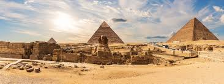
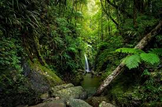
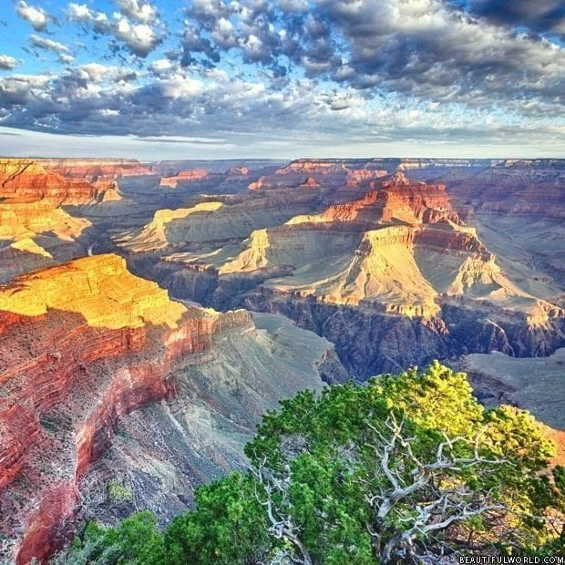

Hi my name is Tali. I love the Bible and doing research about science and archaeology. On this website, I'm going to be talking about the Bible and cool Archeological discoveries

When I imagine ancient Egypt, I picture huge pyramids, busy markets, and the Nile River shining under the hot sun. Egypt was one of the most powerful and advanced civilizations in the world, and the people there believed in many gods, especially the Nile because it gave them water and food. This is the world Moses grew up in before God called him to lead the Israelites out of slavery.
God sent ten plagues to show Pharaoh—and all of Egypt—that He was more powerful than any of their gods. The Nile turned red, frogs and insects filled the land, animals died, storms and locusts destroyed crops, darkness covered the country, and finally the firstborn of Egypt died. Scientists today can explain how some of these things might happen naturally, like algae turning water red or insect populations exploding, but the timing and order of the plagues show that God was in control.
After Pharaoh finally let them go, the Israelites escaped Egypt and crossed the Red Sea, which God parted so they could walk through safely. In the desert, God guided them with a cloud during the day and fire at night. He gave them food called manna and even made water come out of rocks. These miracles helped them survive in one of the harshest environments on earth.
At Mount Sinai, God gave Moses the Ten Commandments, which became the foundation for how the Israelites lived and treated each other. Later, when they entered the Promised Land, events like the walls of Jericho falling showed again that God was guiding them and fighting for them.
Archaeology and science have found evidence of ancient cities, natural disasters, and migration patterns that match parts of the Exodus story. This makes it even more amazing to think that these Bible stories happened in real places, with real people, and real history.

The Amazon Rainforest is one of the coolest places on Earth. It stretches across 9 countries and is full of millions of plants and animals, some that scientists haven’t even discovered yet. When I think about how huge and detailed it is, it reminds me of Genesis 1:31, where God looked at everything He made and said it was very good. The Amazon really shows that.
Plants in the rainforest use sunlight to make food and oxygen through something called photosynthesis. That means they help us breathe! Some plants even become medicine, like the cinchona tree, which helps fight malaria, and the rosy periwinkle, which is used in cancer treatments. Psalm 104:14 says God made plants for people, and it’s amazing how true that is.
The rainforest is built in layers:
It’s like God made different floors in a giant living building so every creature has a place to live.
The Amazon has thousands of animals like jaguars, sloths, toucans, pink dolphins, and electric eels. Some dolphins use sound to “see,” and electric eels can create electricity! Romans 1:20 says we can see God’s power through creation, and honestly, animals like these make that really obvious.
The Amazon River is over 4,000 miles long and carries more water than any other river in the world. It helps plants grow, animals survive, and even affects the weather. Without it, the rainforest wouldn’t exist.
Even the smallest things in the rainforest matter. Bacteria and fungi break down dead leaves and turn them into nutrients for new plants. Some fungi even connect trees underground so they can share food, which is honestly kind of like God invented plant Wi-Fi.
Everything in nature is connected God loves variety and creativity We are supposed to take care of the Earth (Genesis 2:15)
The Amazon Rainforest isn’t just a forest—it’s like a giant, living example of how smart and creative God is.
From the biggest trees to the tiniest microbes, everything works together perfectly. Just like Psalm 19:1 says, creation shows God’s glory, and the Amazon might be one of the best examples of that. 🌿

The Grand Canyon is one of the most amazing places on Earth. It is 277 miles long and over 6,000 feet deep, and it was slowly carved by the Colorado River over millions of years. When you look at it, you can actually see layers of rock that show Earth’s history, almost like pages in a giant book. This reminds me of Psalm 90:4, which says that God’s timing is very different from ours.
The river shaped the canyon little by little, just like how God shapes our lives over time. The rocks and fossils in the canyon show that many different kinds of life once lived there, which shows how creative and powerful God is as a Creator, just like in Genesis.
The canyon is also full of life today, with animals and plants surviving in such a harsh environment. It shows how God provides for His creation. When the sun rises or sets over the canyon, the sky and rocks light up with beautiful colors, and it makes me think of Psalm 19:1, which says the heavens declare the glory of God.
To me, the Grand Canyon is more than just a big hole in the ground. It’s proof that science and faith can go together, and it helps me see how amazing God’s creation really is. 🌄✨